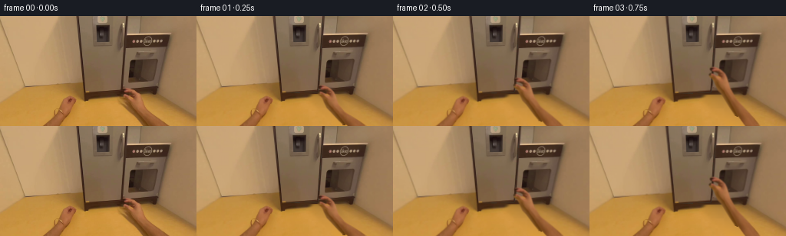
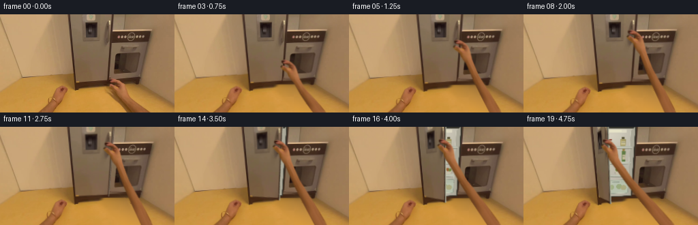
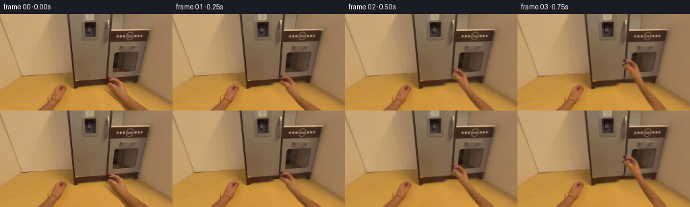
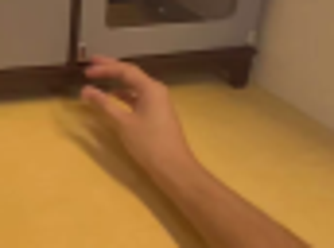
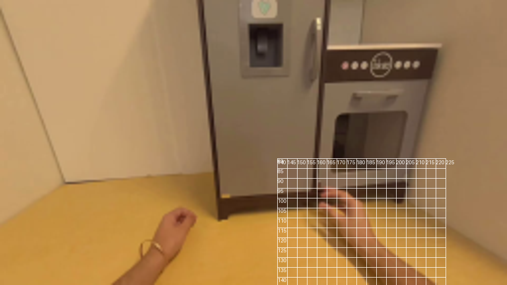
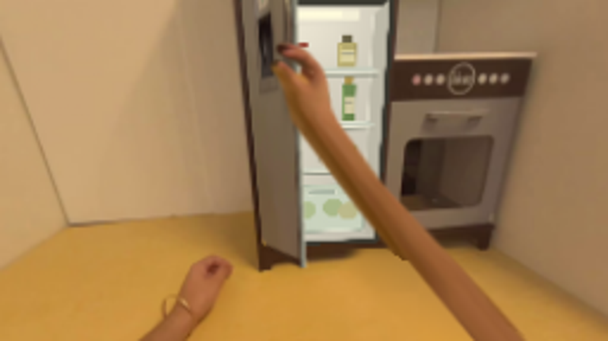
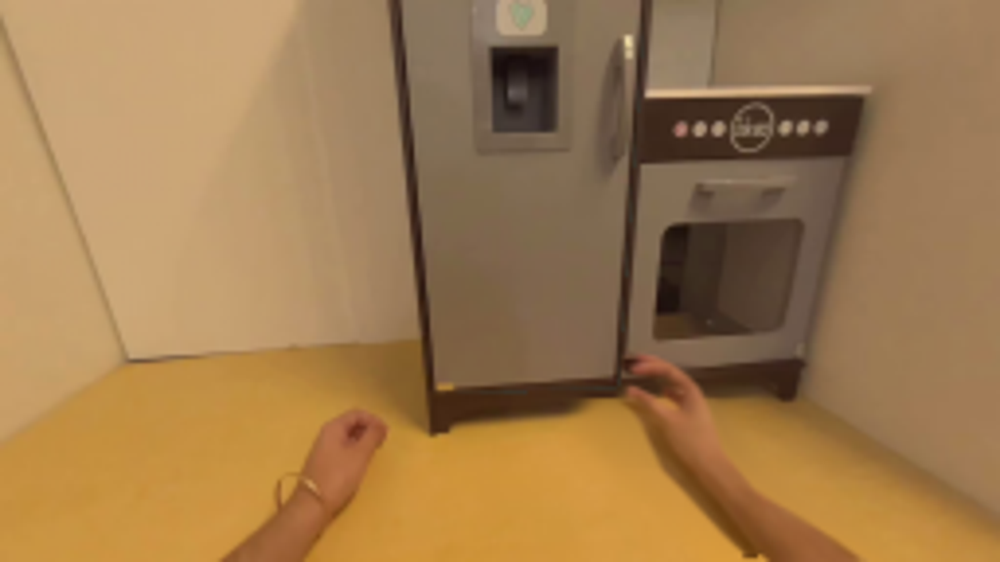
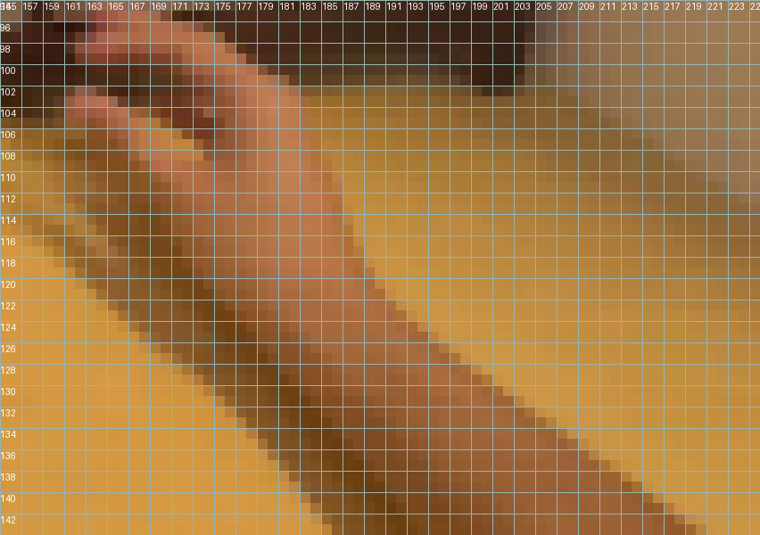
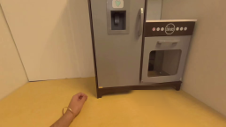
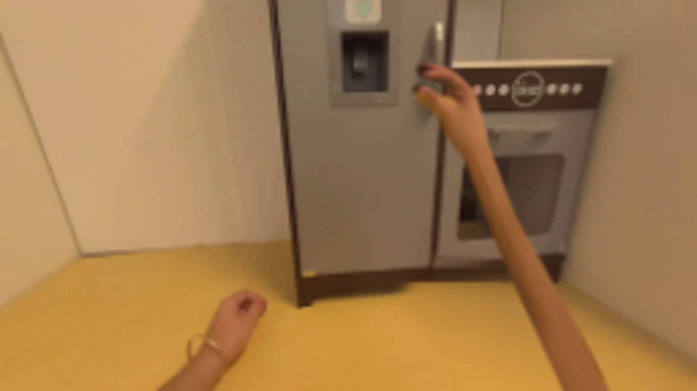

CODING AGENTS AS PIXEL WORLD MODELS
traex/GPT-6.1-Sol · common50_0020
点击播放 · 原生 RGB 像素
逐轮保存的候选
回放视频、检查图与代码变化。
每份候选均可单独播放。实际图片检查记录在下方工具轨迹中。
候选 01播放与检查图
点击播放 · 原生 RGB 像素

展开代码变化
--- 上一保存版本
+++ 本次保存版本
@@ -0,0 +1,267 @@
+from pathlib import Path
+import math
+import numpy as np
+from PIL import Image, ImageDraw, ImageFilter
+import artifact_io
+
+ROOT=Path(__file__).resolve().parent
+IM=np.asarray(Image.open(ROOT/'first_frame.png').convert('RGB'))
+H,W=IM.shape[:2]
+Y,X=np.mgrid[:H,:W].astype(float)
+
+def smooth(t):
+ t=np.clip(t,0,1)
+ return t*t*(3-2*t)
+
+def mask_poly(points,blur=0):
+ a=Image.new('L',(W*4,H*4),0)
+ ImageDraw.Draw(a).polygon([(round(x*4),round(y*4)) for x,y in points],fill=255)
+ if blur:a=a.filter(ImageFilter.GaussianBlur(blur*4))
+ return np.asarray(a.resize((W,H),Image.Resampling.LANCZOS)).astype(float)/255
+
+def sample(im,x,y):
+ h,w=im.shape[:2]
+ x=np.clip(x,0,w-1.001);y=np.clip(y,0,h-1.001)
+ x0=x.astype(int);y0=y.astype(int)
+ fx=x-x0;fy=y-y0
+ if im.ndim==3:fx=fx[...,None];fy=fy[...,None]
+ return im[y0,x0]*(1-fx)*(1-fy)+im[y0,x0+1]*fx*(1-fy)+im[y0+1,x0]*(1-fx)*fy+im[y0+1,x0+1]*fx*fy
+
+def homography(src,dst):
+ a=[];b=[]
+ for (x,y),(u,v) in zip(src,dst):
+ a.append([x,y,1,0,0,0,-u*x,-u*y]);b.append(u)
+ a.append([0,0,0,x,y,1,-v*x,-v*y]);b.append(v)
+ p=np.linalg.solve(np.array(a),np.array(b))
+ return np.r_[p,1].reshape(3,3)
+
+def transform_points(M,p):
+ p=np.c_[np.asarray(p),np.ones(len(p))].T;q=M@p
+ return (q[:2]/q[2]).T
+
+def warp_layer(rgb,alpha,M):
+ inv=np.linalg.inv(M)
+ denom=inv[2,0]*X+inv[2,1]*Y+inv[2,2]
+ sx=(inv[0,0]*X+inv[0,1]*Y+inv[0,2])/denom
+ sy=(inv[1,0]*X+inv[1,1]*Y+inv[1,2])/denom
+ ok=(sx>=0)&(sx<rgb.shape[1]-1)&(sy>=0)&(sy<rgb.shape[0]-1)
+ return sample(rgb,sx,sy), sample(alpha,sx,sy)*ok
+
+def over(back,col,a):return back*(1-a[...,None])+col*a[...,None]
+
+# The original photographic skin and all appliance details are reused.
+hand_outline=[(160,95),(163,94),(168,95),(172,97),(176,100),(179,103),(181,107),(183,113),(185,119),(193,128),(223,144),(224,150),(198,150),(185,139),(175,129),(170,124),(167,118),(165,113),(162,109),(159,107),(158,104),(160,102),(163,103),(167,105),(170,106),(170,103),(167,101),(163,100),(160,99),(159,97)]
+hand_alpha=mask_poly(hand_outline,.24)
+# Clean the portion of the floor hidden by the right arm. Fit a low-order
+# illumination surface only to unobstructed floor in this same photograph.
+floor_mask=((Y>113)&(Y<144)&(X>100)&(X<157))|((Y>121)&(X>228)&(X<256))|((Y>103)&(Y<121)&(X>199)&(X<222))
+feat=np.stack([np.ones_like(X),X/256,Y/144,(X/256)**2,(X/256)*(Y/144),(Y/144)**2],-1)
+coef=np.linalg.lstsq(feat[floor_mask],IM[floor_mask].astype(float),rcond=None)[0]
+floor=feat@coef
+# retain the soft sensor / surface variation from a clear piece of the floor
+tex=IM.astype(float)-feat@coef
+floor+=sample(tex,113+(X%35),116+(Y%24))*.32
+floor=np.clip(floor,0,255)
+plate=IM.astype(float).copy()
+clean=mask_poly([(156,93),(167,92),(181,96),(188,109),(195,119),(227,142),(229,146),(183,146),(161,126),(146,109)],2.0)
+# Match the kickboard rows exposed by the fingertips, rather than inventing a new appliance.
+repair=floor.copy()
+for y in range(90,111):
+ if y<=101:
+ for x in range(145,202):
+ left=IM[y,153].astype(float)
+ right=np.median(IM[y,184:200].astype(float),axis=0)
+ f=np.clip((x-153)/36,0,1)
+ repair[y,x]=left*(1-f)+right*f
+ else:
+ fade=math.exp(-(y-102)/2.0)
+ for x in range(147,199):
+ repair[y,x]=repair[y,x]*(1-.15*fade)
+plate=over(plate,repair,clean)
+# Guarantee complete removal of original skin while allowing a soft shadow boundary.
+plate=over(plate,repair,np.minimum(1,hand_alpha*1.8))
+
+# Render a recessed refrigerator interior mathematically, on a small supersampled
+# texture. It is only exposed as the photographed front door rotates away.
+iw,ih=300,510
+v,u=np.mgrid[:ih,:iw]
+light=1-.09*(u/iw)-.08*(v/ih)+.055*np.exp(-((u-130)/100)**2-((v-45)/65)**2)
+inside=np.stack([231*light,225*light,207*light],-1)
+inside=np.uint8(np.clip(inside,0,255))
+ins=Image.fromarray(inside); d=ImageDraw.Draw(ins)
+# thick rubber gasket and recessed sides
+d.rectangle((0,0,299,509),outline=(58,57,48),width=11)
+d.polygon([(11,0),(42,28),(42,482),(13,504)],fill=(171,167,150))
+d.polygon([(287,0),(257,25),(257,478),(287,501)],fill=(189,185,168))
+d.line([(43,24),(43,481)],fill=(203,199,181),width=3)
+d.line([(257,24),(257,479)],fill=(233,229,211),width=3)
+d.rounded_rectangle((60,16,230,32),radius=5,fill=(244,239,214))
+d.rounded_rectangle((93,18,196,27),radius=3,fill=(255,251,220))
+# quiet back-wall seams
+d.line((48,37,251,37),fill=(212,209,192),width=2)
+# Containers on the rear shelves. Labels, glass shading, and shadows are deliberately understated.
+def bottle(x,y,w,h,body,cap,label=None):
+ d.ellipse((x-4,y+h-1,x+w+10,y+h+6),fill=(174,171,154))
+ d.rounded_rectangle((x,y+8,x+w,y+h),radius=5,fill=body)
+ d.rectangle((x+w*.25,y,x+w*.75,y+9),fill=cap)
+ d.rectangle((x+w*.20,y-4,x+w*.80,y+2),fill=cap)
+ if label:
+ d.rectangle((x+2,y+h*.42,x+w-2,y+h*.80),fill=label)
+ d.line((x+5,y+h*.52,x+w-5,y+h*.52),fill=(161,158,133),width=2)
+ d.line((x+4,y+14,x+4,y+h-6),fill=tuple(min(255,int(c*1.18)) for c in body),width=3)
+ d.line((x+w-2,y+15,x+w-2,y+h-6),fill=tuple(int(c*.78) for c in body),width=2)
+# upper shelf: small tubs and a jar
+d.ellipse((61,104,132,121),fill=(174,169,151))
+d.rounded_rectangle((62,72,124,113),radius=6,fill=(226,218,191))
+d.rectangle((59,70,126,77),fill=(154,76,60))
+d.rectangle((68,86,119,99),fill=(227,219,193))
+bottle(189,61,36,54,(182,170,110),(105,98,69),(218,208,159))
+# center compartment has carton, water, and a green glass bottle
+d.ellipse((60,215,118,226),fill=(171,166,147))
+d.polygon([(65,148),(87,139),(111,149),(111,217),(65,217)],fill=(238,229,202))
+d.polygon([(65,148),(84,151),(84,217),(65,217)],fill=(206,207,186))
+d.rectangle((84,168,108,194),fill=(124,159,160))
+d.line((84,159,105,159),fill=(154,148,125),width=2)
+bottle(140,152,32,67,(178,195,178),(178,190,186),(218,222,208))
+bottle(198,136,29,83,(108,135,79),(171,145,75),(211,202,163))
+# lower shelf: jars and fruit in a dish
+bottle(65,258,34,52,(198,160,92),(196,187,151),(229,215,170))
+d.ellipse((144,277,240,314),fill=(176,171,152))
+d.polygon([(145,285),(240,285),(227,315),(159,315)],fill=(219,210,186))
+for x,y,col in [(162,275,(119,138,65)),(181,269,(176,163,63)),(205,276,(167,105,56)),(223,279,(128,146,72))]:
+ d.ellipse((x-12,y-13,x+12,y+11),fill=col)
+ d.arc((x-8,y-10,x+8,y+6),190,285,fill=tuple(min(255,c+25) for c in col),width=2)
+# Glass shelves with narrow bright front rails, each casting a soft narrow underside.
+for y in [117,222,319]:
+ d.polygon([(42,y-5),(257,y-5),(277,y+6),(24,y+6)],fill=(197,202,186))
+ d.line((28,y+5,274,y+5),fill=(245,242,220),width=4)
+ d.line((29,y+10,273,y+10),fill=(133,137,121),width=4)
+ d.line((48,y-4,252,y-4),fill=(234,234,214),width=2)
+# Bottom transparent vegetable drawer
+for y in [380,459]:
+ d.line((40,y,262,y),fill=(143,151,134),width=3)
+d.rounded_rectangle((41,354,259,475),radius=6,fill=(196,205,183),outline=(154,166,148),width=3)
+for x,y,c in [(75,403,(113,142,74)),(112,417,(143,163,85)),(180,412,(130,153,76)),(218,423,(168,154,80))]:
+ d.ellipse((x-25,y-22,x+26,y+21),fill=c)
+# semi-opaque drawer front provides glass haze
+arr=np.asarray(ins).astype(float)
+arr[380:468,44:257]=arr[380:468,44:257]*.49+np.array([209,217,197])*.51
+ins=Image.fromarray(arr.astype('uint8'));d=ImageDraw.Draw(ins)
+d.rounded_rectangle((117,367,189,380),radius=4,fill=(172,183,165),outline=(231,232,212),width=2)
+d.line((45,471,257,471),fill=(231,234,213),width=3)
+ins=ins.filter(ImageFilter.GaussianBlur(.55))
+interior=np.asarray(ins).astype(float)
+
+src_quad=np.array([[102,0],[165,0],[158,99],[111,101]],float)
+door_alpha=mask_poly(src_quad,.12)
+mi=homography([(0,0),(iw-1,0),(iw-1,ih-1),(0,ih-1)],src_quad)
+interior_rgb,interior_alpha=warp_layer(interior,np.ones((ih,iw)),mi)
+# Source texture includes the dispenser, sticker, and original silver handle.
+door_rgb=IM.astype(float)
+
+# The right forearm is an articulated texture warp, retaining real skin shading,
+# fingers, fingernails, and foreshortening from the single supplied frame.
+wrist0=np.array([181.,120.])
+e0=np.array([.78,.625]);e0/=np.linalg.norm(e0)
+n0=np.array([-e0[1],e0[0]])
+qmax=49.
+
+
+def arm_layer(wrist,rotation,scale,grip):
+ cr,sr=math.cos(rotation),math.sin(rotation)
+ rot=np.array([[cr,-sr],[sr,cr]])
+ er=rot@e0;nr=rot@n0
+ endpoint=np.array([220.,151.])
+ arm=(endpoint-wrist)/qmax
+ # Hand is rigid; forearm length / direction varies around the wrist.
+ px=X-wrist[0];py=Y-wrist[1]
+ q_hand=(px*er[0]+py*er[1])/scale
+ r_hand=(px*nr[0]+py*nr[1])/scale
+ mat=np.stack([arm,nr*scale],axis=1)
+ inv=np.linalg.inv(mat)
+ q_arm=inv[0,0]*px+inv[0,1]*py
+ r_arm=inv[1,0]*px+inv[1,1]*py
+ isarm=q_arm>0
+ q=np.where(isarm,q_arm,q_hand)
+ r=np.where(isarm,r_arm,r_hand)
+ sx=wrist0[0]+q*e0[0]+r*n0[0]
+ sy=wrist0[1]+q*e0[1]+r*n0[1]
+ # The thumb flexes only a little toward the handle on contact.
+ thumb=np.exp(-((sx-161)/5)**2-((sy-105)/3.8)**2)
+ sy=sy+grip*thumb*1.2
+ alpha=sample(hand_alpha,sx,sy)
+ valid=(sx>=0)&(sx<255)&(sy>=0)&(sy<143.99)
+ alpha*=valid
+ col=sample(IM.astype(float),sx,sy)
+ # Extend the forearm's natural texture beyond the original cropped edge.
+ out=(sy>143)&isarm&(np.abs(r)<10.5)
+ if np.any(out):
+ sx2=wrist0[0]+np.minimum(q,34)*e0[0]+r*n0[0]
+ sy2=wrist0[1]+np.minimum(q,34)*e0[1]+r*n0[1]
+ col2=sample(IM.astype(float),sx2,sy2)
+ col=np.where(out[...,None],col2,col)
+ alpha=np.where(out,np.clip((10.5-np.abs(r))/1.2,0,1),alpha)
+ return col,alpha
+
+
+def frame(k):
+ if k==0:return IM.copy()
+ reach=smooth(k/7.)
+ pull=smooth((k-9)/10.)
+ theta=math.radians(70)*pull
+ depth=56*math.sin(theta)
+ fac=250/(250-depth)
+ dest=src_quad.copy()
+ # Perspective projection about the left-hand hinge.
+ for j,hidx in [(1,0),(2,3)]:
+ h=src_quad[hidx];right=src_quad[j]
+ dest[j,0]=128+(h[0]+(right[0]-h[0])*math.cos(theta)-128)*fac
+ dest[j,1]=58+(right[1]-58)*fac
+ md=homography(src_quad,dest)
+ scene=plate.copy()
+ scene=over(scene,interior_rgb,interior_alpha)
+ # Narrow seal and the actual physical thickness of the swinging free edge.
+ edgeim=Image.new('RGBA',(W*4,H*4),(0,0,0,0));ed=ImageDraw.Draw(edgeim)
+ tr,br=dest[1],dest[2]
+ thick=2.3*math.sin(theta)
+ if thick>.05:
+ pts=[tr,br,br+np.array([thick,.1]),tr+np.array([thick,0])]
+ ed.polygon([(int(p[0]*4),int(p[1]*4)) for p in pts],fill=(109,108,95,255))
+ ed.line([(int((tr[0]+thick)*4),int(tr[1]*4)),(int((br[0]+thick)*4),int(br[1]*4))],fill=(184,182,161,255),width=3)
+ edge=np.asarray(edgeim.resize((W,H),Image.Resampling.LANCZOS)).astype(float)
+ scene=over(scene,edge[:,:,:3],edge[:,:,3]/255)
+ dcol,da=warp_layer(door_rgb,door_alpha,md)
+ # brushed metal darkens slightly as its normal turns away from the room light
+ shade=1-.12*pull
+ dcol=dcol*shade+np.array([2,2,1])*pull
+ scene=over(scene,dcol,da)
+ contact0=np.array([164.,100.])
+ initial_target=np.array([157.5,29.])
+ moving_target=transform_points(md,[initial_target])[0]
+ target=contact0*(1-reach)+moving_target*reach
+ rotation=math.radians(4)*reach+math.radians(6)*pull
+ scale=1+.04*reach
+ R=np.array([[math.cos(rotation),-math.sin(rotation)],[math.sin(rotation),math.cos(rotation)]])
+ wrist=target-R@(contact0-wrist0)*scale
+ grip=smooth((k-6)/3)
+ col,ha=arm_layer(wrist,rotation,scale,grip)
+ # a weak local occlusion shadow grounds the hand against the handle and metal
+ if reach>.6:
+ sh=Image.fromarray(np.uint8(ha*255)).filter(ImageFilter.GaussianBlur(2.2))
+ sa=sample(np.asarray(sh).astype(float)/255,X-1.3,Y-1.1)
+ near=door_alpha if pull<.01 else da
+ scene*=1-(.12*reach*sa*near)[...,None]
+ scene=over(scene,col,ha)
+ # slight head motion forward and upward as the person reaches, not a hard camera cut
+ zoom=1+.025*reach+.009*pull
+ shift=.8*reach+.7*pull
+ sx=139+(X-139)/zoom
+ sy=62+(Y-62-shift)/zoom
+ scene=sample(scene,sx,sy)
+ return np.uint8(np.clip(scene,0,255))
+
+frames=np.stack([frame(k) for k in range(20)])
+assert np.array_equal(frames[0],IM)
+artifact_io.save(frames,ROOT)
+Image.fromarray(np.uint8(np.clip(plate,0,255))).save(ROOT/'.tmp/clean_plate.png')
+Image.fromarray(np.uint8(interior)).save(ROOT/'.tmp/interior.png')
候选 02播放与检查图
点击播放 · 原生 RGB 像素


展开代码变化
--- 上一保存版本
+++ 本次保存版本
@@ -50,8 +50,18 @@
def over(back,col,a):return back*(1-a[...,None])+col*a[...,None]
# The original photographic skin and all appliance details are reused.
-hand_outline=[(160,95),(163,94),(168,95),(172,97),(176,100),(179,103),(181,107),(183,113),(185,119),(193,128),(223,144),(224,150),(198,150),(185,139),(175,129),(170,124),(167,118),(165,113),(162,109),(159,107),(158,104),(160,102),(163,103),(167,105),(170,106),(170,103),(167,101),(163,100),(160,99),(159,97)]
-hand_alpha=mask_poly(hand_outline,.24)
+hand_outline=[(160,95),(163,94),(168,95),(172,97),(176,100),(179,103),(181,107),(183,113),(185,119),(193,128),(223,144),(224,150),(198,150),(194,143),(186,136),(179,128),(173,122),(170,118),(168,113),(162,109),(159,107),(158,104),(160,102),(163,103),(167,105),(170,106),(170,103),(167,101),(163,100),(160,99),(159,97)]
+hand_alpha=mask_poly(hand_outline,.32)
+skin_texture=IM.astype(float).copy()
+# Near the wrist/arm border, gently propagate original lit skin color only where
+# the photographed shadow underneath the arm would otherwise be stretched.
+for yy in range(118,144):
+ boundary=170+(yy-118)*1.0
+ for xx in range(max(0,int(boundary)-4),min(W,int(boundary)+5)):
+ if hand_alpha[yy,xx]>.05 and skin_texture[yy,xx,0]<125:
+ rr=min(W-1,xx+4)
+ skin_texture[yy,xx]=IM[yy,rr].astype(float)*.84
+
# Clean the portion of the floor hidden by the right arm. Fit a low-order
# illumination surface only to unobstructed floor in this same photograph.
floor_mask=((Y>113)&(Y<144)&(X>100)&(X<157))|((Y>121)&(X>228)&(X<256))|((Y>103)&(Y<121)&(X>199)&(X<222))
@@ -150,12 +160,14 @@
d.rounded_rectangle((117,367,189,380),radius=4,fill=(172,183,165),outline=(231,232,212),width=2)
d.line((45,471,257,471),fill=(231,234,213),width=3)
ins=ins.filter(ImageFilter.GaussianBlur(.55))
-interior=np.asarray(ins).astype(float)
+interior=np.asarray(ins).astype(float)*.91
src_quad=np.array([[102,0],[165,0],[158,99],[111,101]],float)
door_alpha=mask_poly(src_quad,.12)
mi=homography([(0,0),(iw-1,0),(iw-1,ih-1),(0,ih-1)],src_quad)
interior_rgb,interior_alpha=warp_layer(interior,np.ones((ih,iw)),mi)
+interior_rgb=np.asarray(Image.fromarray(np.uint8(interior_rgb)).filter(ImageFilter.GaussianBlur(.36))).astype(float)
+interior_alpha*=door_alpha
# Source texture includes the dispenser, sticker, and original silver handle.
door_rgb=IM.astype(float)
@@ -192,13 +204,13 @@
alpha=sample(hand_alpha,sx,sy)
valid=(sx>=0)&(sx<255)&(sy>=0)&(sy<143.99)
alpha*=valid
- col=sample(IM.astype(float),sx,sy)
+ col=sample(skin_texture,sx,sy)
# Extend the forearm's natural texture beyond the original cropped edge.
out=(sy>143)&isarm&(np.abs(r)<10.5)
if np.any(out):
sx2=wrist0[0]+np.minimum(q,34)*e0[0]+r*n0[0]
sy2=wrist0[1]+np.minimum(q,34)*e0[1]+r*n0[1]
- col2=sample(IM.astype(float),sx2,sy2)
+ col2=sample(skin_texture,sx2,sy2)
col=np.where(out[...,None],col2,col)
alpha=np.where(out,np.clip((10.5-np.abs(r))/1.2,0,1),alpha)
return col,alpha
@@ -219,7 +231,8 @@
dest[j,1]=58+(right[1]-58)*fac
md=homography(src_quad,dest)
scene=plate.copy()
- scene=over(scene,interior_rgb,interior_alpha)
+ if pull>0:
+ scene=over(scene,interior_rgb,interior_alpha)
# Narrow seal and the actual physical thickness of the swinging free edge.
edgeim=Image.new('RGBA',(W*4,H*4),(0,0,0,0));ed=ImageDraw.Draw(edgeim)
tr,br=dest[1],dest[2]
可观测工具轨迹
实际执行的命令与返回图片。
命令 1exit 0
/bin/bash -lc "ls -la && cat prompt.txt && printf '\\n---RULES---\\n' && cat GENERATION_RULES.md"
命令 2exit 0
/bin/bash -lc 'cat task_spec.json && cat artifact_io.py'
命令 3exit 0
/bin/bash -lc "python - <<'PY'
from PIL import Image
im=Image.open('first_frame.png'); print(im.size); im.resize((1024,576)).save('.tmp/enlarged.png')
PY"命令 4exit 0
/bin/bash -lc "python - <<'PY'
from PIL import Image
im=Image.open('first_frame.png'); im.crop((140,80,226,144)).resize((688,512)).save('.tmp/hand.png')
PY"命令 5exit 0
/bin/bash -lc "python - <<'PY'
from PIL import Image,ImageDraw
im=Image.open('first_frame.png').resize((1024,576)); d=ImageDraw.Draw(im)
for x in range(140,226,5):
d.line((x*4,320,x*4,575),fill=(255,255,255,90));d.text((x*4,322),str(x),fill='white')
for y in range(80,145,5):
d.line((560,y*4,900,y*4),fill='white');d.text((561,y*4),str(y),fill='white')
im.save('.tmp/grid.png')
PY"命令 6exit 0
/bin/bash -lc "python - <<'PY' import importlib.util for n in ['numpy','PIL','scipy','cv2']: print(n, bool(importlib.util.find_spec(n))) PY"
命令 7exit 0
/bin/bash -lc "cat > generate.py <<'PY'
from pathlib import Path
import math
import numpy as np
from PIL import Image, ImageDraw, ImageFilter
import artifact_io
ROOT=Path(__file__).resolve().parent
IM=np.asarray(Image.open(ROOT/'first_frame.png').convert('RGB'))
H,W=IM.shape[:2]
Y,X=np.mgrid[:H,:W].astype(float)
def smooth(t):
t=np.clip(t,0,1)
return t*t*(3-2*t)
def mask_poly(points,blur=0):
a=Image.new('L',(W*4,H*4),0)
ImageDraw.Draw(a).polygon([(round(x*4),round(y*4)) for x,y in points],fill=255)
if blur:a=a.filter(ImageFilter.GaussianBlur(blur*4))
return np.asarray(a.resize((W,H),Image.Resampling.LANCZOS)).astype(float)/255
def sample(im,x,y):
h,w=im.shape[:2]
x=np.clip(x,0,w-1.001);y=np.clip(y,0,h-1.001)
x0=x.astype(int);y0=y.astype(int)
fx=x-x0;fy=y-y0
if im.ndim==3:fx=fx[...,None];fy=fy[...,None]
return im[y0,x0]*(1-fx)*(1-fy)+im[y0,x0+1]*fx*(1-fy)+im[y0+1,x0]*(1-fx)*fy+im[y0+1,x0+1]*fx*fy
def homography(src,dst):
a=[];b=[]
for (x,y),(u,v) in zip(src,dst):
a.append([x,y,1,0,0,0,-u*x,-u*y]);b.append(u)
a.append([0,0,0,x,y,1,-v*x,-v*y]);b.append(v)
p=np.linalg.solve(np.array(a),np.array(b))
return np.r_[p,1].reshape(3,3)
def transform_points(M,p):
p=np.c_[np.asarray(p),np.ones(len(p))].T;q=M@p
return (q[:2]/q[2]).T
def warp_layer(rgb,alpha,M):
inv=np.linalg.inv(M)
denom=inv[2,0]*X+inv[2,1]*Y+inv[2,2]
sx=(inv[0,0]*X+inv[0,1]*Y+inv[0,2])/denom
sy=(inv[1,0]*X+inv[1,1]*Y+inv[1,2])/denom
ok=(sx>=0)&(sx<rgb.shape[1]-1)&(sy>=0)&(sy<rgb.shape[0]-1)
return sample(rgb,sx,sy), sample(alpha,sx,sy)*ok
def over(back,col,a):return back*(1-a[...,None])+col*a[...,None]
# The original photographic skin and all appliance details are reused.
hand_outline=[(160,95),(163,94),(168,95),(172,97),(176,100),(179,103),(181,107),(183,113),(185,119),(193,128),(223,144),(224,150),(198,150),(185,139),(175,129),(170,124),(167,118),(165,113),(162,109),(159,107),(158,104),(160,102),(163,103),(167,105),(170,106),(170,103),(167,101),(163,100),(160,99),(159,97)]
hand_alpha=mask_poly(hand_outline,.24)
# Clean the portion of the floor hidden by the right arm. Fit a low-order
# illumination surface only to unobstructed floor in this same photograph.
floor_mask=((Y>113)&(Y<144)&(X>100)&(X<157))|((Y>121)&(X>228)&(X<256))|((Y>103)&(Y<121)&(X>199)&(X<222))
feat=np.stack([np.ones_like(X),X/256,Y/144,(X/256)**2,(X/256)*(Y/144),(Y/144)**2],-1)
coef=np.linalg.lstsq(feat[floor_mask],IM[floor_mask].astype(float),rcond=None)[0]
floor=feat@coef
# retain the soft sensor / surface variation from a clear piece of the floor
tex=IM.astype(float)-feat@coef
floor+=sample(tex,113+(X%35),116+(Y%24))*.32
floor=np.clip(floor,0,255)
plate=IM.astype(float).copy()
clean=mask_poly([(156,93),(167,92),(181,96),(188,109),(195,119),(227,142),(229,146),(183,146),(161,126),(146,109)],2.0)
# Match the kickboard rows exposed by the fingertips, rather than inventing a new appliance.
repair=floor.copy()
for y in range(90,111):
if y<=101:
for x in range(145,202):
left=IM[y,153].astype(float)
right=np.median(IM[y,184:200].astype(float),axis=0)
f=np.clip((x-153)/36,0,1)
repair[y,x]=left*(1-f)+right*f
else:
fade=math.exp(-(y-102)/2.0)
for x in range(147,199):
repair[y,x]=repair[y,x]*(1-.15*fade)
plate=over(plate,repair,clean)
# Guarantee complete removal of original skin while allowing a soft shadow boundary.
plate=over(plate,repair,np.minimum(1,hand_alpha*1.8))
# Render a recessed refrigerator interior mathematically, on a small supersampled
# texture. It is only exposed as the photographed front door rotates away.
iw,ih=300,510
v,u=np.mgrid[:ih,:iw]
light=1-.09*(u/iw)-.08*(v/ih)+.055*np.exp(-((u-130)/100)**2-((v-45)/65)**2)
inside=np.stack([231*light,225*light,207*light],-1)
inside=np.uint8(np.clip(inside,0,255))
ins=Image.fromarray(inside); d=ImageDraw.Draw(ins)
# thick rubber gasket and recessed sides
d.rectangle((0,0,299,509),outline=(58,57,48),width=11)
d.polygon([(11,0),(42,28),(42,482),(13,504)],fill=(171,167,150))
d.polygon([(287,0),(257,25),(257,478),(287,501)],fill=(189,185,168))
d.line([(43,24),(43,481)],fill=(203,199,181),width=3)
d.line([(257,24),(257,479)],fill=(233,229,211),width=3)
d.rounded_rectangle((60,16,230,32),radius=5,fill=(244,239,214))
d.rounded_rectangle((93,18,196,27),radius=3,fill=(255,251,220))
# quiet back-wall seams
d.line((48,37,251,37),fill=(212,209,192),width=2)
# Containers on the rear shelves. Labels, glass shading, and shadows are deliberately understated.
def bottle(x,y,w,h,body,cap,label=None):
d.ellipse((x-4,y+h-1,x+w+10,y+h+6),fill=(174,171,154))
d.rounded_rectangle((x,y+8,x+w,y+h),radius=5,fill=body)
d.rectangle((x+w*.25,y,x+w*.75,y+9),fill=cap)
d.rectangle((x+w*.20,y-4,x+w*.80,y+2),fill=cap)
if label:
d.rectangle((x+2,y+h*.42,x+w-2,y+h*.80),fill=label)
d.line((x+5,y+h*.52,x+w-5,y+h*.52),fill=(161,158,133),width=2)
d.line((x+4,y+14,x+4,y+h-6),fill=tuple(min(255,int(c*1.18)) for c in body),width=3)
d.line((x+w-2,y+15,x+w-2,y+h-6),fill=tuple(int(c*.78) for c in body),width=2)
# upper shelf: small tubs and a jar
d.ellipse((61,104,132,121),fill=(174,169,151))
d.rounded_rectangle((62,72,124,113),radius=6,fill=(226,218,191))
d.rectangle((59,70,126,77),fill=(154,76,60))
d.rectangle((68,86,119,99),fill=(227,219,193))
bottle(189,61,36,54,(182,170,110),(105,98,69),(218,208,159))
# center compartment has carton, water, and a green glass bottle
d.ellipse((60,215,118,226),fill=(171,166,147))
d.polygon([(65,148),(87,139),(111,149),(111,217),(65,217)],fill=(238,229,202))
d.polygon([(65,148),(84,151),(84,217),(65,217)],fill=(206,207,186))
d.rectangle((84,168,108,194),fill=(124,159,160))
d.line((84,159,105,159),fill=(154,148,125),width=2)
bottle(140,152,32,67,(178,195,178),(178,190,186),(218,222,208))
bottle(198,136,29,83,(108,135,79),(171,145,75),(211,202,163))
# lower shelf: jars and fruit in a dish
bottle(65,258,34,52,(198,160,92),(196,187,151),(229,215,170))
d.ellipse((144,277,240,314),fill=(176,171,152))
d.polygon([(145,285),(240,285),(227,315),(159,315)],fill=(219,210,186))
for x,y,col in [(162,275,(119,138,65)),(181,269,(176,163,63)),(205,276,(167,105,56)),(223,279,(128,146,72))]:
d.ellipse((x-12,y-13,x+12,y+11),fill=col)
d.arc((x-8,y-10,x+8,y+6),190,285,fill=tuple(min(255,c+25) for c in col),width=2)
# Glass shelves with narrow bright front rails, each casting a soft narrow underside.
for y in [117,222,319]:
d.polygon([(42,y-5),(257,y-5),(277,y+6),(24,y+6)],fill=(197,202,186))
d.line((28,y+5,274,y+5),fill=(245,242,220),width=4)
d.line((29,y+10,273,y+10),fill=(133,137,121),width=4)
d.line((48,y-4,252,y-4),fill=(234,234,214),width=2)
# Bottom transparent vegetable drawer
for y in [380,459]:
d.line((40,y,262,y),fill=(143,151,134),width=3)
d.rounded_rectangle((41,354,259,475),radius=6,fill=(196,205,183),outline=(154,166,148),width=3)
for x,y,c in [(75,403,(113,142,74)),(112,417,(143,163,85)),(180,412,(130,153,76)),(218,423,(168,154,80))]:
d.ellipse((x-25,y-22,x+26,y+21),fill=c)
# semi-opaque drawer front provides glass haze
arr=np.asarray(ins).astype(float)
arr[380:468,44:257]=arr[380:468,44:257]*.49+np.array([209,217,197])*.51
ins=Image.fromarray(arr.astype('uint8'));d=ImageDraw.Draw(ins)
d.rounded_rectangle((117,367,189,380),radius=4,fill=(172,183,165),outline=(231,232,212),width=2)
d.line((45,471,257,471),fill=(231,234,213),width=3)
ins=ins.filter(ImageFilter.GaussianBlur(.55))
interior=np.asarray(ins).astype(float)
src_quad=np.array([[102,0],[165,0],[158,99],[111,101]],float)
door_alpha=mask_poly(src_quad,.12)
mi=homography([(0,0),(iw-1,0),(iw-1,ih-1),(0,ih-1)],src_quad)
interior_rgb,interior_alpha=warp_layer(interior,np.ones((ih,iw)),mi)
# Source texture includes the dispenser, sticker, and original silver handle.
door_rgb=IM.astype(float)
# The right forearm is an articulated texture warp, retaining real skin shading,
# fingers, fingernails, and foreshortening from the single supplied frame.
wrist0=np.array([181.,120.])
e0=np.array([.78,.625]);e0/=np.linalg.norm(e0)
n0=np.array([-e0[1],e0[0]])
qmax=49.
def arm_layer(wrist,rotation,scale,grip):
cr,sr=math.cos(rotation),math.sin(rotation)
rot=np.array([[cr,-sr],[sr,cr]])
er=rot@e0;nr=rot@n0
endpoint=np.array([220.,151.])
arm=(endpoint-wrist)/qmax
# Hand is rigid; forearm length / direction varies around the wrist.
px=X-wrist[0];py=Y-wrist[1]
q_hand=(px*er[0]+py*er[1])/scale
r_hand=(px*nr[0]+py*nr[1])/scale
mat=np.stack([arm,nr*scale],axis=1)
inv=np.linalg.inv(mat)
q_arm=inv[0,0]*px+inv[0,1]*py
r_arm=inv[1,0]*px+inv[1,1]*py
isarm=q_arm>0
q=np.where(isarm,q_arm,q_hand)
r=np.where(isarm,r_arm,r_hand)
sx=wrist0[0]+q*e0[0]+r*n0[0]
sy=wrist0[1]+q*e0[1]+r*n0[1]
# The thumb flexes only a little toward the handle on contact.
thumb=np.exp(-((sx-161)/5)**2-((sy-105)/3.8)**2)
sy=sy+grip*thumb*1.2
alpha=sample(hand_alpha,sx,sy)
valid=(sx>=0)&(sx<255)&(sy>=0)&(sy<143.99)
alpha*=valid
col=sample(IM.astype(float),sx,sy)
# Extend the forearm's natural texture beyond the original cropped edge.
out=(sy>143)&isarm&(np.abs(r)<10.5)
if np.any(out):
sx2=wrist0[0]+np.minimum(q,34)*e0[0]+r*n0[0]
sy2=wrist0[1]+np.minimum(q,34)*e0[1]+r*n0[1]
col2=sample(IM.astype(float),sx2,sy2)
col=np.where(out[...,None],col2,col)
alpha=np.where(out,np.clip((10.5-np.abs(r))/1.2,0,1),alpha)
return col,alpha
def frame(k):
if k==0:return IM.copy()
reach=smooth(k/7.)
pull=smooth((k-9)/10.)
theta=math.radians(70)*pull
depth=56*math.sin(theta)
fac=250/(250-depth)
dest=src_quad.copy()
# Perspective projection about the left-hand hinge.
for j,hidx in [(1,0),(2,3)]:
h=src_quad[hidx];right=src_quad[j]
dest[j,0]=128+(h[0]+(right[0]-h[0])*math.cos(theta)-128)*fac
dest[j,1]=58+(right[1]-58)*fac
md=homography(src_quad,dest)
scene=plate.copy()
scene=over(scene,interior_rgb,interior_alpha)
# Narrow seal and the actual physical thickness of the swinging free edge.
edgeim=Image.new('RGBA',(W*4,H*4),(0,0,0,0));ed=ImageDraw.Draw(edgeim)
tr,br=dest[1],dest[2]
thick=2.3*math.sin(theta)
if thick>.05:
pts=[tr,br,br+np.array([thick,.1]),tr+np.array([thick,0])]
ed.polygon([(int(p[0]*4),int(p[1]*4)) for p in pts],fill=(109,108,95,255))
ed.line([(int((tr[0]+thick)*4),int(tr[1]*4)),(int((br[0]+thick)*4),int(br[1]*4))],fill=(184,182,161,255),width=3)
edge=np.asarray(edgeim.resize((W,H),Image.Resampling.LANCZOS)).astype(float)
scene=over(scene,edge[:,:,:3],edge[:,:,3]/255)
dcol,da=warp_layer(door_rgb,door_alpha,md)
# brushed metal darkens slightly as its normal turns away from the room light
shade=1-.12*pull
dcol=dcol*shade+np.array([2,2,1])*pull
scene=over(scene,dcol,da)
contact0=np.array([164.,100.])
initial_target=np.array([157.5,29.])
moving_target=transform_points(md,[initial_target])[0]
target=contact0*(1-reach)+moving_target*reach
rotation=math.radians(4)*reach+math.radians(6)*pull
scale=1+.04*reach
R=np.array([[math.cos(rotation),-math.sin(rotation)],[math.sin(rotation),math.cos(rotation)]])
wrist=target-R@(contact0-wrist0)*scale
grip=smooth((k-6)/3)
col,ha=arm_layer(wrist,rotation,scale,grip)
# a weak local occlusion shadow grounds the hand against the handle and metal
if reach>.6:
sh=Image.fromarray(np.uint8(ha*255)).filter(ImageFilter.GaussianBlur(2.2))
sa=sample(np.asarray(sh).astype(float)/255,X-1.3,Y-1.1)
near=door_alpha if pull<.01 else da
scene*=1-(.12*reach*sa*near)[...,None]
scene=over(scene,col,ha)
# slight head motion forward and upward as the person reaches, not a hard camera cut
zoom=1+.025*reach+.009*pull
shift=.8*reach+.7*pull
sx=139+(X-139)/zoom
sy=62+(Y-62-shift)/zoom
scene=sample(scene,sx,sy)
return np.uint8(np.clip(scene,0,255))
frames=np.stack([frame(k) for k in range(20)])
assert np.array_equal(frames[0],IM)
artifact_io.save(frames,ROOT)
Image.fromarray(np.uint8(np.clip(plate,0,255))).save(ROOT/'.tmp/clean_plate.png')
Image.fromarray(np.uint8(interior)).save(ROOT/'.tmp/interior.png')
PY
python generate.py"命令 8exit 0
/bin/bash -lc "python - <<'PY'
from PIL import Image
for k in [1,7,19]:Image.open(f'frames/{k:02}.png').resize((1024,576)).save(f'.tmp/big{k}.png')
PY"命令 9exit 0
/bin/bash -lc "python - <<'PY'
from PIL import Image,ImageDraw
im=Image.open('first_frame.png').crop((155,94,226,144)).resize((852,600),Image.Resampling.NEAREST); d=ImageDraw.Draw(im)
for x in range(155,227,2):
d.line(((x-155)*12,0,(x-155)*12,600),fill=(150,180,180));d.text(((x-155)*12+1,1),str(x),fill='white')
for y in range(94,145,2):
d.line((0,(y-94)*12,852,(y-94)*12),fill=(150,180,180));d.text((0,(y-94)*12+1),str(y),fill='white')
im.save('.tmp/hgrid.png')
PY"命令 10exit 0
/bin/bash -lc "python - <<'PY'
p='generate.py'
s=open(p).read()
s=s.replace(\"(198,150),(185,139),(175,129),(170,124),(167,118),(165,113)\",\"(198,150),(194,143),(186,136),(179,128),(173,122),(170,118),(168,113)\")
s=s.replace(\"hand_alpha=mask_poly(hand_outline,.24)\",\"hand_alpha=mask_poly(hand_outline,.32)\")
s=s.replace(\"interior=np.asarray(ins).astype(float)\",\"interior=np.asarray(ins).astype(float)*.91\")
s=s.replace(\"interior_rgb,interior_alpha=warp_layer(interior,np.ones((ih,iw)),mi)\",\"interior_rgb,interior_alpha=warp_layer(interior,np.ones((ih,iw)),mi)\\ninterior_rgb=np.asarray(Image.fromarray(np.uint8(interior_rgb)).filter(ImageFilter.GaussianBlur(.36))).astype(float)\\ninterior_alpha*=door_alpha\")
s=s.replace(\"scene=over(scene,interior_rgb,interior_alpha)\",\"if pull>0:\\n scene=over(scene,interior_rgb,interior_alpha)\")
# Remove background contamination from the dark underside of the original forearm,
# using each source row's warm skin continuation, not a synthesized material.
s=s.replace(\"hand_alpha=mask_poly(hand_outline,.32)\",\"\"\"hand_alpha=mask_poly(hand_outline,.32)
skin_texture=IM.astype(float).copy()
# Near the wrist/arm border, gently propagate original lit skin color only where
# the photographed shadow underneath the arm would otherwise be stretched.
for yy in range(118,144):
boundary=170+(yy-118)*1.0
for xx in range(max(0,int(boundary)-4),min(W,int(boundary)+5)):
if hand_alpha[yy,xx]>.05 and skin_texture[yy,xx,0]<125:
rr=min(W-1,xx+4)
skin_texture[yy,xx]=IM[yy,rr].astype(float)*.84
\"\"\")
s=s.replace(\"col=sample(IM.astype(float),sx,sy)\",\"col=sample(skin_texture,sx,sy)\")
s=s.replace(\"col2=sample(IM.astype(float),sx2,sy2)\",\"col2=sample(skin_texture,sx2,sy2)\")
open(p,'w').write(s)
PY
python generate.py
python - <<'PY'
from PIL import Image
Image.open('frames/07.png').resize((1024,576)).save('.tmp/refined7.png')
PY"命令 11exit 0
/bin/bash -lc "command -v ffmpeg || true; python - <<'PY'
import numpy as np
from PIL import Image
p=np.load('pixels.npz')['pixels']; a=np.asarray(Image.open('first_frame.png').convert('RGB')); packed=(a[:,:,0].astype(np.uint32)<<16)|(a[:,:,1].astype(np.uint32)<<8)|a[:,:,2].astype(np.uint32)
assert p.shape==(144,256,20)
assert np.array_equal(p[:,:,0],packed)
assert len(list(__import__('pathlib').Path('frames').glob('*.png')))==20
print('Validated: 20 RGB frames, 256x144; frame 00 pixel-identical.')
PY"视觉工具实际返回图片 1
视觉工具实际返回图片 2

视觉工具实际返回图片 3

视觉工具实际返回图片 4

视觉工具实际返回图片 5

视觉工具实际返回图片 6

视觉工具实际返回图片 7
视觉工具实际返回图片 8

视觉工具实际返回图片 9

视觉工具实际返回图片 10

视觉工具实际返回图片 11

保存候选 2 份；完成命令 11 次；可验证图片返回 11 张。原始 API 响应与完整日志保留在本地。